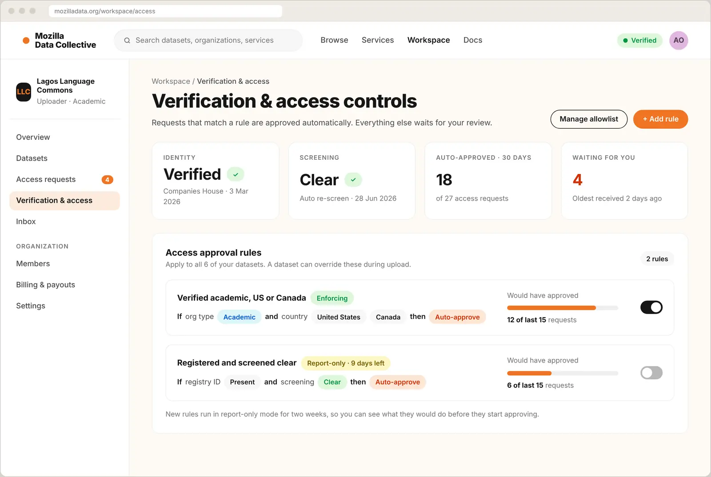
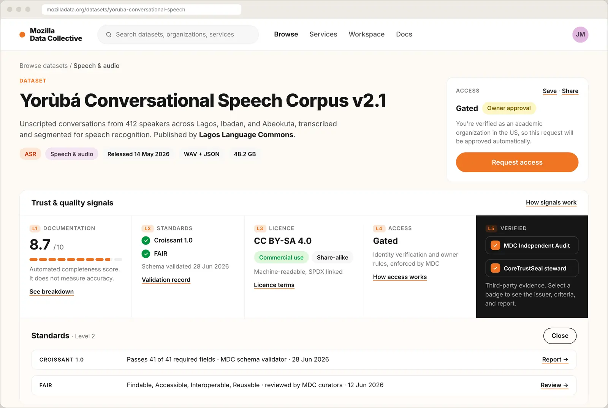

Designing the next phase of an ethical data platform
Mozilla Data Collective lets communities and organizations share datasets for AI on their own terms. Version one proved people would upload and download. The next phase needed to give data owners control over who gets their data, give buyers reasons to trust it, and add services the platform could grow on. I designed that phase, from site architecture to screens.

- Problem
- Owners wanted to approve every download, which meant a review queue nobody could keep up with.
- Impact
- Rules handle routine requests, and each rule shows what it would have done before it goes live. Request to Access launched in May 2026.

- Problem
- Buyers couldn't tell whether a dataset was documented, properly licensed, or independently checked without downloading it first.
- Impact
- Five signals, each with its evidence one click away, so buyers can judge a dataset before they request it.

- Problem
- Organizations needed curation and annotation help, but neither side wanted to share contact details with a stranger.
- Impact
- Buyers send a request, and contact details stay hidden until both sides agree. It gives the platform a services marketplace staff can review and run.
- Role
- Senior designer
- Timeline
- 2025 – 2026
- Worked with
- Product, engineering, R&D, partnerships, and data communities
- Research
- Pricing research across 200+ datasets, demand survey and false door, flow mapping, open-question reviews
- Tools
- Figma, Figma MCP, Claude Code
- Outcome
- Request to Access and the Data Assistant launched in May 2026. The platform holds 600+ datasets from 190+ vetted organizations in 300+ languages.
The problem
Two groups had to trust the platform, and they wanted opposite things. Data owners, from language communities to archives, wanted to share without losing control over who downloads, for what, and on what terms. Buyers wanted to find good data fast, without guessing whether it's documented, properly licensed, or safe to use.
Every feature touched both groups, plus payments, verification, and messaging. Designing one screen at a time would have made a mess.
What data is worth, and what people would pay
Paid tiers only work if the prices make sense. I catalogued prices for 200+ datasets sold elsewhere and used that range to decide where our pricing and paid tiers should sit.
Before committing engineering time, I ran a short survey and a false door on the browse page. It asked which premium features mattered (unlimited downloads, benchmarks, warehouse integrations, custom bundles), what a fair monthly price would be, and what type of organization people worked for.

Site architecture before screens
I mapped the platform in three layers: public discovery, a workspace split by role (uploader and downloader), and shared systems such as verification, messaging, quality signals, payments, and notifications.
Each feature on the map lists its free and paid versions, expected value, and the design work it still needs. The map became a shared backlog for product, engineering, and R&D, and it showed early that access, verification, and messaging were one problem, not three.

Let owners decide who gets in, without a manual queue
Owners wanted to approve every download, which means a queue nobody keeps up with. I designed rules instead. An organization is verified once against a public registry and screened automatically. Owners then set rules like "auto-approve verified academic organizations in the US or Canada," and everything else waits for review.
- Test before enforcing. Each rule shows how many recent requests it would have approved, and new rules run in report-only mode for two weeks.
- Defaults with exceptions. Organization rules apply to every dataset. Sensitive datasets can get stricter rules at upload.
- Denials that explain. A denied request shows the owner's reason and links to similar datasets.


Five signals buyers can check at a glance
"Is this data any good?" doesn't have one answer, so I split it into five signals: documentation, standards (Croissant and FAIR), license, access, and third-party verification.
The free tier gets an automated documentation score. Paid tiers add independent audits and validated standards. Each signal opens to show its evidence: validator, date, and report. The documentation score measures completeness, not accuracy, and the screen says so.

A services marketplace the team can run
Organizations also need curation, annotation, and collection. In the services directory, verified providers list what they offer and buyers request to connect. Contact details stay hidden until both sides agree.
New listings go to a review queue, where staff assign a verification tier, send the listing back for changes, or deny it with a reason the provider can see. Partnerships too early for the marketplace go through a simple contact form.


A brand and system to build on
I wrote ten pages of brand guidelines under one idea, Open data, well tended: logo and clear space, a palette led by Brand Orange #F07424, 37 named color tokens, type scales, a 4 px spacing scale with 12, 8, and 4 column grids, and core components. I rebuilt the design system as code-first components in Claude Code, so engineering built from the same source and handoff went from weeks to days.
Open decisions live in "Open question" notes on the screens they affect, so the team could settle them in context instead of in meetings.
 01 · Cover
01 · Cover 02 · Contents
02 · Contents 03 · Logo usage
03 · Logo usage 04 · Colour palette
04 · Colour palette 05 · Colour tokens
05 · Colour tokens 06 · Display and headings
06 · Display and headings 07 · Body and UI type
07 · Body and UI type 08 · Spacing and grid
08 · Spacing and grid 09 · Components
09 · Components 10 · Sign-off
10 · Sign-off


All ten pages of the brand guidelines. Select a page to open it full size.
Where it landed
- Access control launched. Request to Access went live in May 2026, so owners can require approval before download.
- At scale. 600+ curated datasets from 190+ vetted organizations in 300+ languages.
- A roadmap with evidence. The pricing research, survey, and architecture gave the team one view of what to build next, what it's worth, and what's still open.
- Ready for payments. The same structure supports upcoming paid licensing, where owners set the price and keep 100 percent of the fee.
The three final designs at the top apply the MDC design system to the wireframes below. The wireframes are 2025 and 2026 design files, some features are still in progress, and all names and numbers in the screens are examples.
Source: Mozilla Foundation, May 2026